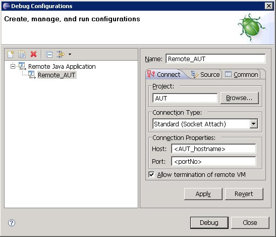

Create a new "Remote Java Application" in the "Launch configuration" dialog and enter the hostname for the computer on which the AUT Agent is running. The specified port has to be the same which you used in the AUT configuration (e.g. 4711).
Figure 11.1: Launching eclipse remote debug application
|  |
To get your AUT running using remote debugging options you have to take the following steps:
- Start the AUT Agent
- Connect the ITE with the AUT Agent , load the Project in the ITE and invoke the startup of the AUT in the ITE .
- If ''suspend=y'', you now have to run your "Remote Java Application"-configuration in Eclipse, as the JVM is waiting for the debugger to connect before starting the application. As soon as you are connected you should see the default debug behaviour in your debug perspective of Eclipse.
- Your AUT has now been launched with the ability to use remote debugging.
If you wish to debug an RCP AUT which is launched with an executable file, you must pass these JRE arguments via the AUT arguments and ''-vmargs''. When using this option, make sure you overwrite all JRE options that are defined in the ''config.ini'' of your RCP launcher.
Copyright BREDEX GmbH 2014. Made available under the Eclipse Public License v1.0.